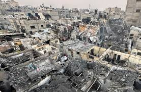

Israel attacks Gaza again
 Israeli troops have continued their offensives across Gaza, deploying tank fire, artillery bombardment and airstrikes against Hamas militants in the most intensive round of fighting for weeks. In the far south of the devastated territory on Monday, witnesses reported helicopter strikes and street battles in Rafah as the Israel Defense Forces (IDF) consolidated their hold on neighborhoods east of the strategic Salah al-Din road, which bisects the city. In the north, the IDF advanced into Jabaliya and Beit Lahiya, both areas in which fierce battles were fought early in the seven-month war. Officials estimate that as many as 500,000 people have fled Rafah since being told to evacuate by the IDF before their first attacks around and in the city a week ago. Roads heading north and west are choked with cars, trucks, trolleys and pony carts laden with people and their possessions. The fighting has forced many big aid organizations to shut down or reduce their operations across Gaza, amid increasingly acute shortages of fuel, food and clean water. The risks to aid workers in Gaza were again made clear when a UN vehicle was hit on its way to a hospital in Gaza. Attending a ceremony in Jerusalem on Monday to mark Israel’s fallen soldiers, Benjamin Netanyahu, the Israeli prime minister, said the war against Hamas was an existential struggle. “It’s us or them – Israel or the monsters of Hamas. It’s existence, freedom, security and prosperity, or annihilation, massacre, rape and enslavement. We are determined to win this fight. We are exacting and will continue to exact a heavy price from the enemy for their criminal actions,” Netanyahu said.DEPED old school calendar
In a meeting of the House basic education committee, Leila Areola, director of DepEd’s Bureau of Learning Delivery said the school year for 2024-2025 will start on July 29 and end on March 31, 2025 “so that the following school year, school year 2025-2026, we’ll already be starting the school year by June.”
Read MoreQCU partnership with PLP
This collaboration aims to empower local barangay leaders and Sangguniang Kabataan (SK) officials in supporting OSYs through the United States International Agency (USAID)-funded Executive Course for Barangay Leaders on Systems Delivery Support for the Out-of-School Youth (BLeSDS for the OSY)
Read MoreVice Ganda, Ibigin mo ang Pilipinas Challange
Vice ganda was commended for her tiktok piliin mo ang pilipinas challenge, which showcases social issues in the Philippines and showing her love to the philippines despite the issues the country faces.
Read More